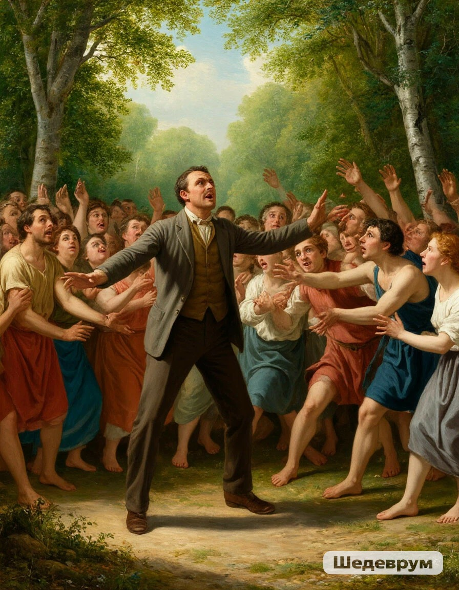
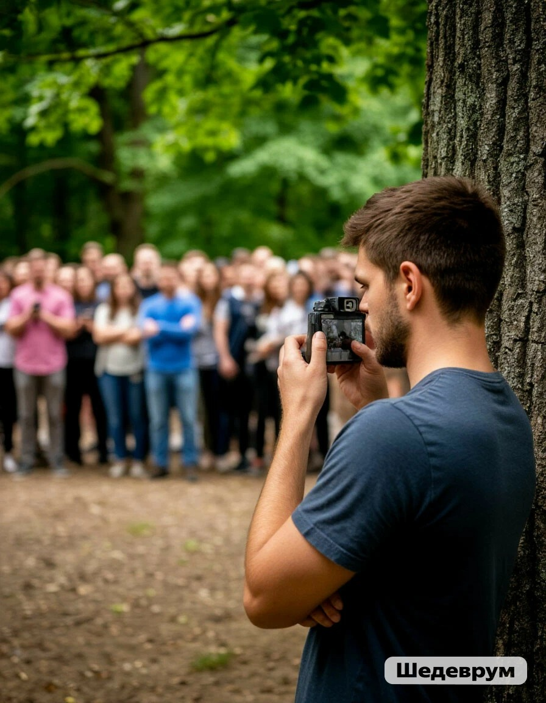

Вы отходите подальше, чтобы вас не заметили, и набираете номер природоохранной инспекции. Оператор отвечает, что ближайший наряд сможет выехать только через час. Вы смотрите на группу сборщиков. Они уже заканчивают собирать растения на этом склоне и переходят к соседнему, где растут еще более редкие виды. Что вы сделаете?

Попытаться задержать сборщиков разговором, чтобы они не успели перейти на новый участок до приезда инспекции

Сделать несколько четких фотографий нарушителей и дожидаться инспекцию в безопасном месте